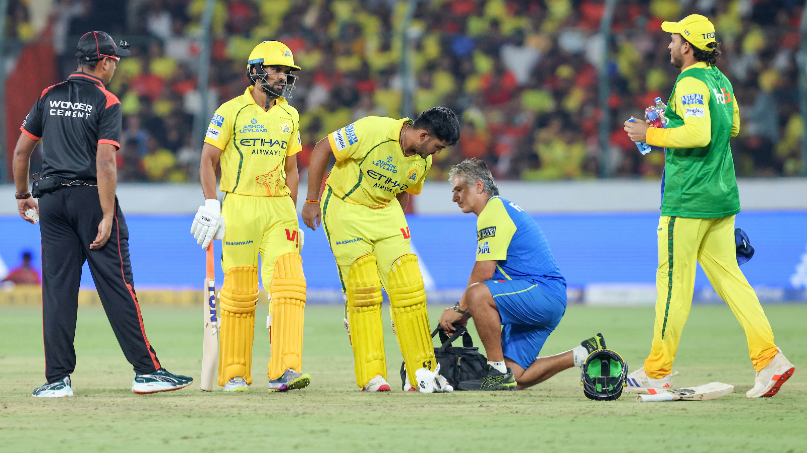

Ayush Mhatre hamstring injury update: CSK youngster likely to miss 3 weeks in IPL 2026 after suffering a hamstring tear. Check recovery time, team impact, and latest news.
The Indian Premier League 2026 season has taken another dramatic turn as young Chennai Super Kings (CSK) batter Ayush Mhatre has been ruled out after suffering a hamstring injury during a crucial match.
Ayush Mhatre picked up the injury while playing an explosive innings against Sunrisers Hyderabad. The young batter smashed a quickfire 30 runs off just 12 balls before pulling up with discomfort, indicating a possible hamstring tear.
Medical staff attended to him immediately, and he was forced to leave the field, raising concerns among fans and team management.
Initial reports suggest that Mhatre has suffered a hamstring tear, which is a serious concern in cricket. These types of injuries usually occur due to sudden sprinting or explosive movement — something very common in T20 matches.
Dhoni’s absence creates a significant gap in leadership and finishing ability. Chennai Super Kings may face challenges in close matches without his experience.
While the franchise has not officially confirmed the recovery timeline, such injuries can typically keep players out for 2 to 6 weeks, depending on severity.
Mhatre has been one of the standout performers for Chennai Super Kings this season.
His absence comes at a time when CSK is struggling to find consistency in IPL 2026.
The injury couldn’t have come at a worse time. CSK is currently battling in the lower half of the points table, and losing an in-form batter like Mhatre weakens their already fragile batting lineup.
The team management now faces tough decisions:
While no official replacement has been announced, CSK might consider:
Fans will be closely watching how the team adapts in the upcoming matches.
Injuries are always unfortunate, especially for young talents like Ayush Mhatre who are just beginning to make their mark. His aggressive batting style has been a bright spot for CSK this season, and his absence will definitely be felt.
CSK supporters will be hoping for a quick recovery and a strong comeback later in the tournament.